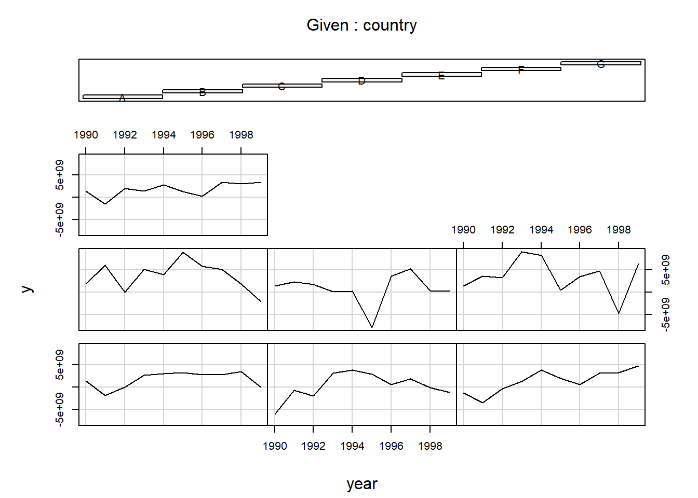
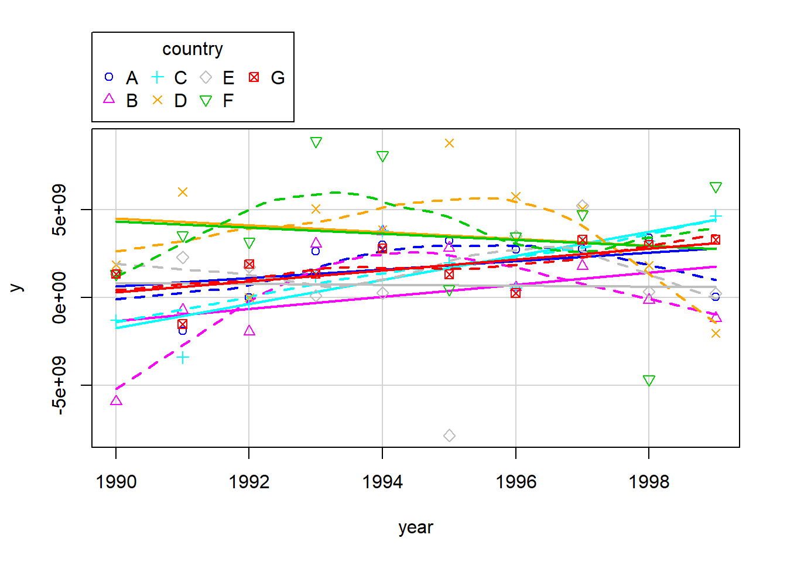
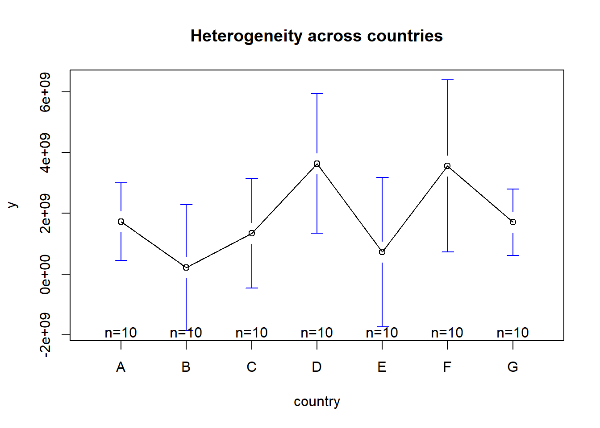
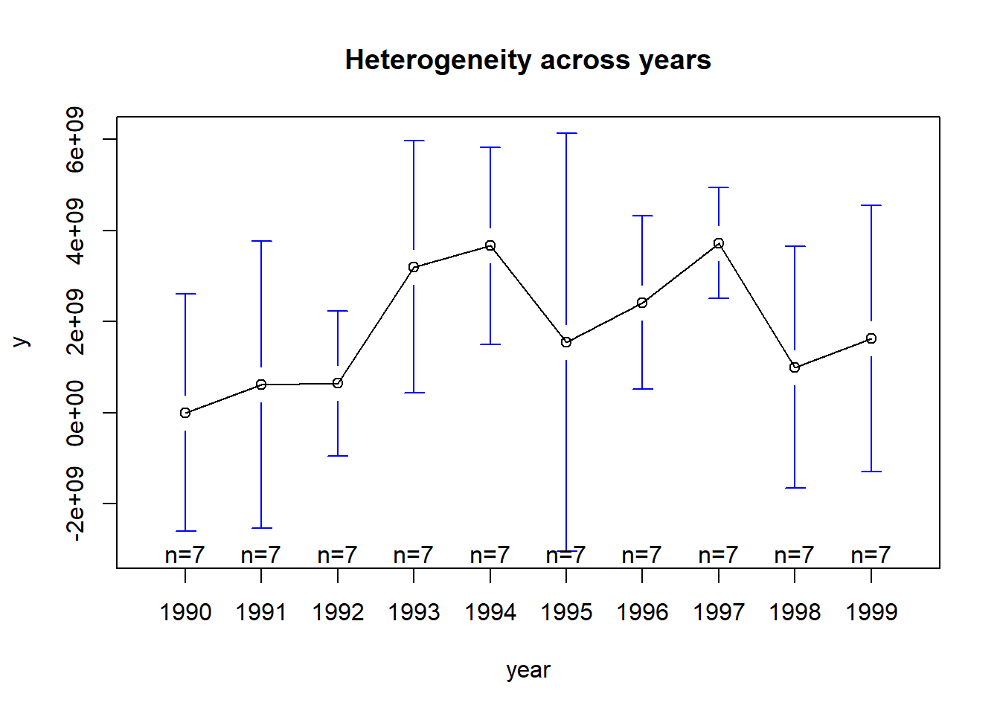
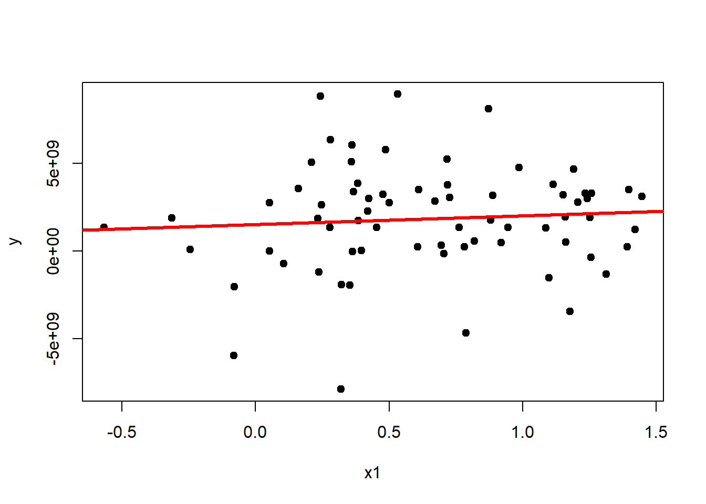
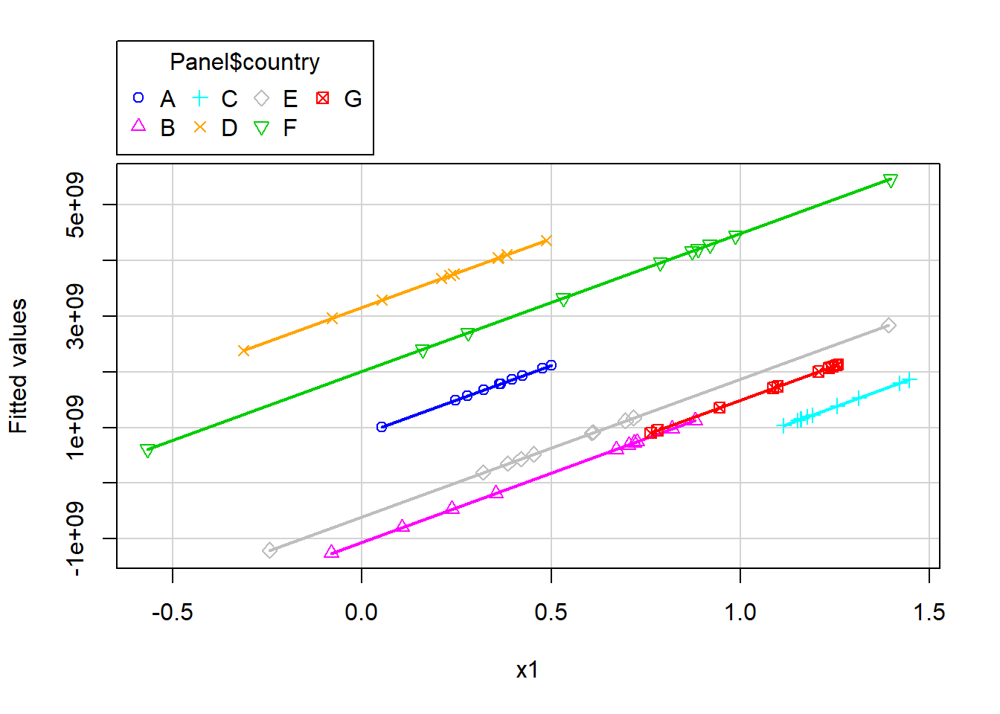
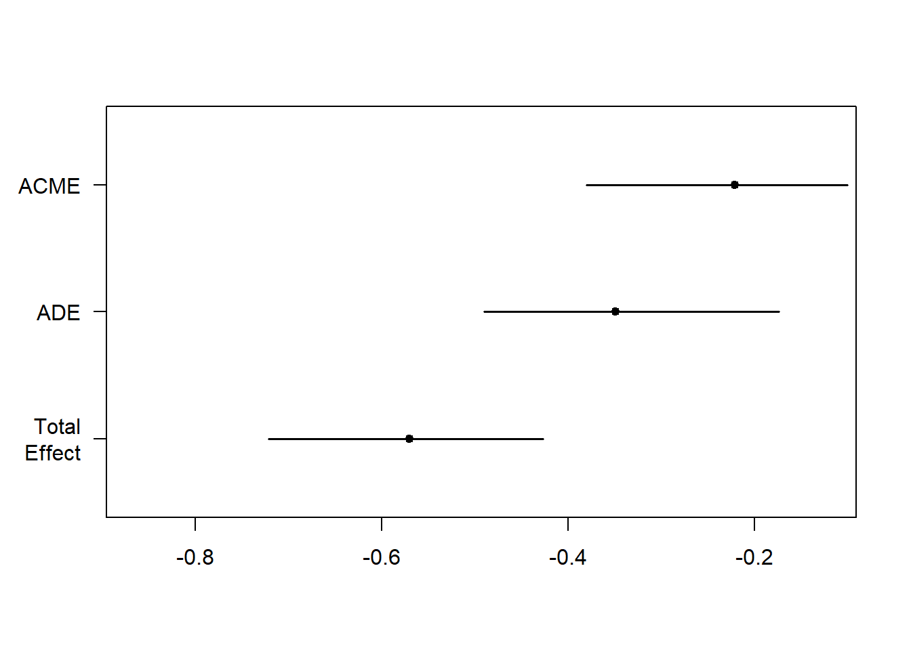

## Set your working directory to the ICPSR_regression folder
## Change the path below to match your computer
# setwd("~/ICPSR_regression")
rm(list = ls())
setwd("C:/Users/Patrick Shea/Dropbox/My Projects/Spring 2026/ICPSR/ICPSR_OLS26/data")
# install.packages(c("plm", "foreign", "gplots", "car", "stargazer",
# "haven", "mediation", "sampleSelection", "AER"))
library(plm)
library(foreign)
library(gplots)
library(car)
library(stargazer)Session 7: Panel Data and Two-Stage Models
About this document
This is a Quarto document — it mixes explanatory text with executable R code. You can run each code chunk one at a time in RStudio, or click the Render button to produce a polished HTML page with all output embedded. No special setup is required beyond having the packages installed.
Part 1: Panel Data Methods
What is panel data?
Up to now, every regression we’ve run has used cross-sectional data — one snapshot per unit. Panel data (also called longitudinal data) observes the same units repeatedly over time. This gives us a big advantage: we can separate changes within a unit from differences between units, which helps control for unobserved characteristics that might bias our estimates.
Loading and visualizing panel structure
We’ll start with a simple teaching dataset from Princeton that tracks several countries over time. It loads directly from a URL, so no local file is needed.
Panel <- read.dta("http://dss.princeton.edu/training/Panel101.dta")
head(Panel) country year y y_bin x1 x2 x3 opinion op
1 A 1990 1342787840 1 0.2779036 -1.1079559 0.28255358 Str agree 1
2 A 1991 -1899660544 0 0.3206847 -0.9487200 0.49253848 Disag 0
3 A 1992 -11234363 0 0.3634657 -0.7894840 0.70252335 Disag 0
4 A 1993 2645775360 1 0.2461440 -0.8855330 -0.09439092 Disag 0
5 A 1994 3008334848 1 0.4246230 -0.7297683 0.94613063 Disag 0
6 A 1995 3229574144 1 0.4772141 -0.7232460 1.02968037 Str agree 1Visualizing how units change over time
A key first step with panel data is to see the structure. The coplot() function shows the trajectory of each country in its own panel:
coplot(y ~ year | country, type = "l", data = Panel)
coplot(y ~ year | country, type = "b", data = Panel)The scatterplot() function from the car package overlays all countries on a single plot, colored by group:
scatterplot(y ~ year | country, boxplots = FALSE, smooth = TRUE,
reg.line = FALSE, data = Panel)
The heterogeneity problem
The whole motivation for panel methods is heterogeneity — some countries are systematically higher or lower on our outcome. Let’s visualize this directly.
Heterogeneity across countries (unit effects):
plotmeans(y ~ country, main = "Heterogeneity across countries", data = Panel)
Heterogeneity across years (time effects):
plotmeans(y ~ year, main = "Heterogeneity across years", data = Panel)
If these plots show big differences across countries or years, ignoring the panel structure will bias our estimates.
Pooled OLS
The simplest approach is to ignore the panel structure and run ordinary OLS, treating every country-year as an independent observation:
ols <- lm(y ~ x1, data = Panel)
summary(ols)
Call:
lm(formula = y ~ x1, data = Panel)
Residuals:
Min 1Q Median 3Q Max
-9.546e+09 -1.578e+09 1.554e+08 1.422e+09 7.183e+09
Coefficients:
Estimate Std. Error t value Pr(>|t|)
(Intercept) 1.524e+09 6.211e+08 2.454 0.0167 *
x1 4.950e+08 7.789e+08 0.636 0.5272
---
Signif. codes: 0 '***' 0.001 '**' 0.01 '*' 0.05 '.' 0.1 ' ' 1
Residual standard error: 3.028e+09 on 68 degrees of freedom
Multiple R-squared: 0.005905, Adjusted R-squared: -0.008714
F-statistic: 0.4039 on 1 and 68 DF, p-value: 0.5272plot(Panel$x1, Panel$y, pch = 19, xlab = "x1", ylab = "y")
abline(lm(Panel$y ~ Panel$x1), lwd = 3, col = "red")
This gives us one slope and one intercept. The implicit assumption is that all countries are identical — there’s no unobserved country-level factor affecting the outcome. That’s a strong assumption.
Fixed effects: the intuition
Fixed effects deals with heterogeneity by comparing each country to itself over time. The simplest way to understand this is to decompose each variable into two parts:
- Between variation = each country’s average (how countries differ from each other)
- Within variation = each country’s deviations from its own average (how a country changes over time)
Fixed effects throws away the between variation and uses only the within variation.
# Decompose x1 into within and between components
btw.x <- ave(Panel$x1, Panel$country) # Between: country means
wi.x <- Panel$x1 - btw.x # Within: deviations from country means
# Fixed effects = regression on within variation only
fixed.hand <- lm(Panel$y ~ wi.x)
summary(fixed.hand)
Call:
lm(formula = Panel$y ~ wi.x)
Residuals:
Min 1Q Median 3Q Max
-9.174e+09 -1.868e+09 3.073e+08 1.492e+09 7.327e+09
Coefficients:
Estimate Std. Error t value Pr(>|t|)
(Intercept) 1.845e+09 3.515e+08 5.249 1.65e-06 ***
wi.x 2.476e+09 1.164e+09 2.126 0.0371 *
---
Signif. codes: 0 '***' 0.001 '**' 0.01 '*' 0.05 '.' 0.1 ' ' 1
Residual standard error: 2.941e+09 on 68 degrees of freedom
Multiple R-squared: 0.06234, Adjusted R-squared: 0.04855
F-statistic: 4.521 on 1 and 68 DF, p-value: 0.03711We can also include both components to see how they differ:
fixed.hand2 <- lm(Panel$y ~ wi.x + btw.x)
summary(fixed.hand2)
Call:
lm(formula = Panel$y ~ wi.x + btw.x)
Residuals:
Min 1Q Median 3Q Max
-9.281e+09 -1.910e+09 3.704e+08 1.375e+09 7.305e+09
Coefficients:
Estimate Std. Error t value Pr(>|t|)
(Intercept) 2461785986 734855303 3.350 0.00133 **
wi.x 2475617827 1165016294 2.125 0.03728 *
btw.x -951717959 995682134 -0.956 0.34259
---
Signif. codes: 0 '***' 0.001 '**' 0.01 '*' 0.05 '.' 0.1 ' ' 1
Residual standard error: 2.943e+09 on 67 degrees of freedom
Multiple R-squared: 0.07496, Adjusted R-squared: 0.04734
F-statistic: 2.715 on 2 and 67 DF, p-value: 0.07352If the within and between coefficients are very different, it suggests that unobserved country-level confounders are biasing the between estimate — exactly the situation where fixed effects helps.
Fixed effects with dummy variables (LSDV)
An equivalent approach is to include a separate intercept for each country. This is the Least Squares Dummy Variable estimator:
fixed.dum <- lm(y ~ x1 + factor(country) - 1, data = Panel)
summary(fixed.dum)
Call:
lm(formula = y ~ x1 + factor(country) - 1, data = Panel)
Residuals:
Min 1Q Median 3Q Max
-8.634e+09 -9.697e+08 5.405e+08 1.386e+09 5.612e+09
Coefficients:
Estimate Std. Error t value Pr(>|t|)
x1 2.476e+09 1.107e+09 2.237 0.02889 *
factor(country)A 8.805e+08 9.618e+08 0.916 0.36347
factor(country)B -1.058e+09 1.051e+09 -1.006 0.31811
factor(country)C -1.723e+09 1.632e+09 -1.056 0.29508
factor(country)D 3.163e+09 9.095e+08 3.478 0.00093 ***
factor(country)E -6.026e+08 1.064e+09 -0.566 0.57329
factor(country)F 2.011e+09 1.123e+09 1.791 0.07821 .
factor(country)G -9.847e+08 1.493e+09 -0.660 0.51190
---
Signif. codes: 0 '***' 0.001 '**' 0.01 '*' 0.05 '.' 0.1 ' ' 1
Residual standard error: 2.796e+09 on 62 degrees of freedom
Multiple R-squared: 0.4402, Adjusted R-squared: 0.368
F-statistic: 6.095 on 8 and 62 DF, p-value: 8.892e-06Each country gets its own intercept, but they all share the same slope on x1. We can visualize the fitted values:
yhat2 <- fixed.dum$fitted
scatterplot(yhat2 ~ Panel$x1 | Panel$country, boxplots = FALSE,
xlab = "x1", ylab = "Fitted values", smooth = FALSE)
Fixed effects with plm
In practice, we use the plm package, which handles the demeaning automatically and produces clean output:
fixed <- plm(y ~ x1, data = Panel,
index = c("country", "year"), model = "within")
summary(fixed)Oneway (individual) effect Within Model
Call:
plm(formula = y ~ x1, data = Panel, model = "within", index = c("country",
"year"))
Balanced Panel: n = 7, T = 10, N = 70
Residuals:
Min. 1st Qu. Median Mean 3rd Qu. Max.
-8.63e+09 -9.70e+08 5.40e+08 0.00e+00 1.39e+09 5.61e+09
Coefficients:
Estimate Std. Error t-value Pr(>|t|)
x1 2475617827 1106675594 2.237 0.02889 *
---
Signif. codes: 0 '***' 0.001 '**' 0.01 '*' 0.05 '.' 0.1 ' ' 1
Total Sum of Squares: 5.2364e+20
Residual Sum of Squares: 4.8454e+20
R-Squared: 0.074684
Adj. R-Squared: -0.029788
F-statistic: 5.00411 on 1 and 62 DF, p-value: 0.028892We can extract the country-specific intercepts (the “fixed effects” themselves):
fixef(fixed) A B C D E F
880542404 -1057858363 -1722810755 3162826897 -602622000 2010731793
G
-984717493 And formally test whether fixed effects are needed versus pooled OLS. The null hypothesis is that all individual intercepts are equal (i.e., pooled OLS is adequate):
pFtest(fixed, ols)
F test for individual effects
data: y ~ x1
F = 2.9655, df1 = 6, df2 = 62, p-value = 0.01307
alternative hypothesis: significant effectsA significant result means the country effects are real and we should not ignore them.
Random effects
The random effects model also accounts for individual heterogeneity, but assumes it is random and uncorrelated with the predictors. If that assumption holds, random effects is more efficient because it uses both within- and between-unit variation:
random <- plm(y ~ x1, data = Panel,
index = c("country", "year"), model = "random")
summary(random)Oneway (individual) effect Random Effect Model
(Swamy-Arora's transformation)
Call:
plm(formula = y ~ x1, data = Panel, model = "random", index = c("country",
"year"))
Balanced Panel: n = 7, T = 10, N = 70
Effects:
var std.dev share
idiosyncratic 7.815e+18 2.796e+09 0.873
individual 1.133e+18 1.065e+09 0.127
theta: 0.3611
Residuals:
Min. 1st Qu. Median Mean 3rd Qu. Max.
-8.94e+09 -1.51e+09 2.82e+08 0.00e+00 1.56e+09 6.63e+09
Coefficients:
Estimate Std. Error z-value Pr(>|z|)
(Intercept) 1037014284 790626206 1.3116 0.1896
x1 1247001782 902145601 1.3823 0.1669
Total Sum of Squares: 5.6595e+20
Residual Sum of Squares: 5.5048e+20
R-Squared: 0.02733
Adj. R-Squared: 0.013026
Chisq: 1.91065 on 1 DF, p-value: 0.16689Comparing all three models
stargazer(ols, fixed, random, type = "html",
column.labels = c("Pooled OLS", "Fixed Effects", "Random Effects"))| Dependent variable: | |||
| y | |||
| OLS | panel | ||
| linear | |||
| Pooled OLS | Fixed Effects | Random Effects | |
| (1) | (2) | (3) | |
| x1 | 494,988,914.000 | 2,475,617,827.000** | 1,247,001,782.000 |
| (778,861,261.000) | (1,106,675,594.000) | (902,145,601.000) | |
| Constant | 1,524,319,070.000** | 1,037,014,284.000 | |
| (621,072,624.000) | (790,626,206.000) | ||
| Observations | 70 | 70 | 70 |
| R2 | 0.006 | 0.075 | 0.027 |
| Adjusted R2 | -0.009 | -0.030 | 0.013 |
| Residual Std. Error | 3,028,276,248.000 (df = 68) | ||
| F Statistic | 0.404 (df = 1; 68) | 5.004** (df = 1; 62) | 1.911 |
| Note: | p<0.1; p<0.05; p<0.01 | ||
Hausman test: choosing between FE and RE
The Hausman test checks whether the random effects assumption (no correlation between individual effects and predictors) is valid.
- H0: Random effects is consistent (no correlation).
- H1: Only fixed effects is consistent.
phtest(fixed, random)
Hausman Test
data: y ~ x1
chisq = 3.674, df = 1, p-value = 0.05527
alternative hypothesis: one model is inconsistentIf \(p < 0.05\), reject H0 and use fixed effects. Otherwise, random effects is acceptable.
Additional diagnostic tests
Time fixed effects
Should we also control for year-specific shocks? We add year dummies and test whether they’re jointly significant:
fixed.time <- plm(y ~ x1 + factor(year), data = Panel,
index = c("country", "year"), model = "within")
pFtest(fixed.time, fixed)
F test for individual effects
data: y ~ x1 + factor(year)
F = 1.209, df1 = 9, df2 = 53, p-value = 0.3094
alternative hypothesis: significant effectsA significant result means time effects matter and should be included.
Serial correlation
Panel data often exhibits serial correlation — observations for the same unit in adjacent years are correlated. The Breusch-Godfrey test checks for this:
pbgtest(fixed)
Breusch-Godfrey/Wooldridge test for serial correlation in panel models
data: y ~ x1
chisq = 14.137, df = 10, p-value = 0.1668
alternative hypothesis: serial correlation in idiosyncratic errorsIf significant, we may need to cluster our standard errors or use other corrections.
Part 2: Two-Stage Models
Panel data addresses unobserved heterogeneity. But what about reverse causality or omitted pathway problems? This section covers three strategies: mediation analysis, sample selection correction, and instrumental variables.
We’ll use the Acemoglu, Johnson, and Robinson (AJR) dataset, which studies how colonial-era settler mortality affected modern economic outcomes through the quality of institutions.
library(haven)
library(mediation)
library(sampleSelection)
library(AER)
ajr2 <- read_dta("ajr2.dta")Mediation analysis
Research question: Does settler mortality affect GDP through the quality of institutions, or does it have a direct effect as well?
The causal chain we hypothesize is:
\[\text{Settler Mortality} \longrightarrow \text{Institutions (risk)} \longrightarrow \text{GDP}\]
Mediation analysis decomposes the total effect into a direct path and an indirect path (through the mediator).
Step 1: Total effect (without the mediator)
First, what is the overall relationship between settler mortality and GDP?
total_model <- lm(loggdp ~ logmort0, data = ajr2)
summary(total_model)
Call:
lm(formula = loggdp ~ logmort0, data = ajr2)
Residuals:
Min 1Q Median 3Q Max
-2.7325 -0.5197 0.1361 0.4801 1.4123
Coefficients:
Estimate Std. Error t value Pr(>|t|)
(Intercept) 10.69980 0.37395 28.613 < 2e-16 ***
logmort0 -0.57005 0.07774 -7.332 5.7e-10 ***
---
Signif. codes: 0 '***' 0.001 '**' 0.01 '*' 0.05 '.' 0.1 ' ' 1
Residual standard error: 0.7729 on 62 degrees of freedom
Multiple R-squared: 0.4644, Adjusted R-squared: 0.4558
F-statistic: 53.77 on 1 and 62 DF, p-value: 5.704e-10Step 2: Effect of X on the mediator
Does settler mortality predict institutional quality?
mediator_model <- lm(risk ~ logmort0, data = ajr2)
summary(mediator_model)
Call:
lm(formula = risk ~ logmort0, data = ajr2)
Residuals:
Min 1Q Median 3Q Max
-2.6507 -0.9889 0.0324 0.8498 3.3768
Coefficients:
Estimate Std. Error t value Pr(>|t|)
(Intercept) 9.3659 0.6106 15.339 < 2e-16 ***
logmort0 -0.6133 0.1269 -4.831 9.27e-06 ***
---
Signif. codes: 0 '***' 0.001 '**' 0.01 '*' 0.05 '.' 0.1 ' ' 1
Residual standard error: 1.262 on 62 degrees of freedom
Multiple R-squared: 0.2735, Adjusted R-squared: 0.2618
F-statistic: 23.34 on 1 and 62 DF, p-value: 9.273e-06Step 3: Direct and indirect effects
When we include both settler mortality and institutions in the same model, we can see the direct effect of mortality (controlling for institutions) and use the coefficients to calculate the indirect effect:
outcome_model <- lm(loggdp ~ risk + logmort0, data = ajr2)
summary(outcome_model)
Call:
lm(formula = loggdp ~ risk + logmort0, data = ajr2)
Residuals:
Min 1Q Median 3Q Max
-2.14198 -0.30514 0.08318 0.41165 1.16421
Coefficients:
Estimate Std. Error t value Pr(>|t|)
(Intercept) 7.32255 0.66726 10.974 4.52e-16 ***
risk 0.36059 0.06338 5.689 3.86e-07 ***
logmort0 -0.34890 0.07433 -4.694 1.56e-05 ***
---
Signif. codes: 0 '***' 0.001 '**' 0.01 '*' 0.05 '.' 0.1 ' ' 1
Residual standard error: 0.6298 on 61 degrees of freedom
Multiple R-squared: 0.6501, Adjusted R-squared: 0.6386
F-statistic: 56.67 on 2 and 61 DF, p-value: 1.231e-14The indirect effect is the product of the path from X to the mediator and the path from the mediator to Y:
coef_risk <- coef(outcome_model)["risk"]
coef_logmort0 <- coef(mediator_model)["logmort0"]
indirect_effect <- coef_risk * coef_logmort0
indirect_effect risk
-0.2211458 Formal mediation test
The mediate() function uses bootstrapping to get proper confidence intervals for the indirect, direct, and total effects:
set.seed(12345)
mediation_result <- mediate(mediator_model, outcome_model,
treat = "logmort0", mediator = "risk",
sims = 1000, boot = TRUE)
summary(mediation_result)
Causal Mediation Analysis
Nonparametric Bootstrap Confidence Intervals with the Percentile Method
Estimate 95% CI Lower 95% CI Upper p-value
ACME -0.22115 -0.38007 -0.10056 < 2.2e-16 ***
ADE -0.34890 -0.49019 -0.17335 < 2.2e-16 ***
Total Effect -0.57005 -0.72107 -0.42703 < 2.2e-16 ***
Prop. Mediated 0.38794 0.19684 0.65096 < 2.2e-16 ***
---
Signif. codes: 0 '***' 0.001 '**' 0.01 '*' 0.05 '.' 0.1 ' ' 1
Sample Size Used: 64
Simulations: 1000 plot(mediation_result)
How to read the output:
- ACME (Average Causal Mediation Effect) = the indirect effect through institutions
- ADE (Average Direct Effect) = the part of settler mortality’s effect that doesn’t go through institutions
- Total Effect = ACME + ADE
- Proportion Mediated = what fraction of the total effect operates through the mediator
Sample selection models (Heckman correction)
Sometimes we observe the outcome only for a non-random subset of the population. For example, we only observe wages for people who choose to work. If the decision to work is correlated with wage determinants, naive OLS on the working subsample is biased.
The Heckman selection model corrects for this by jointly modeling the selection equation (who works?) and the outcome equation (what wage do workers earn?).
data("Mroz87", package = "sampleSelection")First, the naive approach — just running OLS on people who work:
working_women <- subset(Mroz87, lfp == 1)
naive_model <- lm(log(wage) ~ educ + exper + I(exper^2) + age,
data = working_women)
summary(naive_model)
Call:
lm(formula = log(wage) ~ educ + exper + I(exper^2) + age, data = working_women)
Residuals:
Min 1Q Median 3Q Max
-3.08521 -0.30587 0.04946 0.37523 2.37077
Coefficients:
Estimate Std. Error t value Pr(>|t|)
(Intercept) -0.5333761 0.2778430 -1.920 0.05557 .
educ 0.1075228 0.0141745 7.586 2.12e-13 ***
exper 0.0415623 0.0131909 3.151 0.00174 **
I(exper^2) -0.0008152 0.0003996 -2.040 0.04195 *
age 0.0002836 0.0048553 0.058 0.95344
---
Signif. codes: 0 '***' 0.001 '**' 0.01 '*' 0.05 '.' 0.1 ' ' 1
Residual standard error: 0.6672 on 423 degrees of freedom
Multiple R-squared: 0.1568, Adjusted R-squared: 0.1489
F-statistic: 19.67 on 4 and 423 DF, p-value: 7.328e-15Now the Heckman two-step estimator. The selection equation includes variables that affect the decision to work (including kids5 and kids618, which plausibly affect participation but not wages directly). The outcome equation models wages conditional on working:
selection_formula <- lfp ~ nwifeinc + educ + exper + I(exper^2) + age + kids5 + kids618
outcome_formula <- log(wage) ~ educ + exper + I(exper^2) + age
heckman_result <- selection(selection_formula, outcome_formula,
data = Mroz87, method = "2step")
summary(heckman_result)--------------------------------------------
Tobit 2 model (sample selection model)
2-step Heckman / heckit estimation
753 observations (325 censored and 428 observed)
16 free parameters (df = 738)
Probit selection equation:
Estimate Std. Error t value Pr(>|t|)
(Intercept) 0.270077 0.508593 0.531 0.59556
nwifeinc -0.012024 0.004840 -2.484 0.01320 *
educ 0.130905 0.025254 5.183 2.81e-07 ***
exper 0.123348 0.018716 6.590 8.35e-11 ***
I(exper^2) -0.001887 0.000600 -3.145 0.00173 **
age -0.052853 0.008477 -6.235 7.62e-10 ***
kids5 -0.868328 0.118522 -7.326 6.22e-13 ***
kids618 0.036005 0.043477 0.828 0.40786
Outcome equation:
Estimate Std. Error t value Pr(>|t|)
(Intercept) -0.5708801 0.3120663 -1.829 0.0677 .
educ 0.1095345 0.0161004 6.803 2.12e-11 ***
exper 0.0447027 0.0178719 2.501 0.0126 *
I(exper^2) -0.0008664 0.0004439 -1.952 0.0514 .
age -0.0006676 0.0060686 -0.110 0.9124
Multiple R-Squared:0.157, Adjusted R-Squared:0.147
Error terms:
Estimate Std. Error t value Pr(>|t|)
invMillsRatio 0.04346 0.16797 0.259 0.796
sigma 0.66392 NA NA NA
rho 0.06546 NA NA NA
--------------------------------------------Comparing the naive OLS with the selection-corrected estimates:
stargazer(naive_model, heckman_result, type = "html",
column.labels = c("Naive OLS", "Heckman Selection"))| Dependent variable: | ||
| log(wage) | NA | |
| OLS | selection | |
| Naive OLS | Heckman Selection | |
| (1) | (2) | |
| educ | 0.108*** | 0.110*** |
| (0.014) | (0.016) | |
| exper | 0.042*** | 0.045** |
| (0.013) | (0.018) | |
| I(exper2) | -0.001** | -0.001* |
| (0.0004) | (0.0004) | |
| age | 0.0003 | -0.001 |
| (0.005) | (0.006) | |
| Constant | -0.533* | -0.571* |
| (0.278) | (0.312) | |
| Observations | 428 | 753 |
| R2 | 0.157 | |
| Adjusted R2 | 0.149 | |
| rho | 0.065 | |
| Inverse Mills Ratio | 0.043 (0.168) | |
| Residual Std. Error | 0.667 (df = 423) | |
| F Statistic | 19.669*** (df = 4; 423) | |
| Note: | p<0.1; p<0.05; p<0.01 | |
If the inverse Mills ratio (the selection correction term, often labeled \(\lambda\) or rho) is significant, it means selection bias was present and the correction matters.
Instrumental variables
Problem: Institutions and GDP are likely jointly determined — rich countries can afford better institutions, and better institutions produce growth. OLS on GDP ~ institutions conflates both directions.
Solution: Use settler mortality as an instrument for institutional quality. The logic: places where colonial settlers died at high rates got extractive institutions (because settlers didn’t stay), and those institutions persisted. Settler mortality affects GDP only through its effect on institutions, not directly.
First stage: Does the instrument predict the endogenous variable?
first_stage <- lm(risk ~ logmort0, data = ajr2)
summary(first_stage)
Call:
lm(formula = risk ~ logmort0, data = ajr2)
Residuals:
Min 1Q Median 3Q Max
-2.6507 -0.9889 0.0324 0.8498 3.3768
Coefficients:
Estimate Std. Error t value Pr(>|t|)
(Intercept) 9.3659 0.6106 15.339 < 2e-16 ***
logmort0 -0.6133 0.1269 -4.831 9.27e-06 ***
---
Signif. codes: 0 '***' 0.001 '**' 0.01 '*' 0.05 '.' 0.1 ' ' 1
Residual standard error: 1.262 on 62 degrees of freedom
Multiple R-squared: 0.2735, Adjusted R-squared: 0.2618
F-statistic: 23.34 on 1 and 62 DF, p-value: 9.273e-06Reduced form: Does the instrument affect the outcome?
reduced_form <- lm(loggdp ~ logmort0, data = ajr2)
summary(reduced_form)
Call:
lm(formula = loggdp ~ logmort0, data = ajr2)
Residuals:
Min 1Q Median 3Q Max
-2.7325 -0.5197 0.1361 0.4801 1.4123
Coefficients:
Estimate Std. Error t value Pr(>|t|)
(Intercept) 10.69980 0.37395 28.613 < 2e-16 ***
logmort0 -0.57005 0.07774 -7.332 5.7e-10 ***
---
Signif. codes: 0 '***' 0.001 '**' 0.01 '*' 0.05 '.' 0.1 ' ' 1
Residual standard error: 0.7729 on 62 degrees of freedom
Multiple R-squared: 0.4644, Adjusted R-squared: 0.4558
F-statistic: 53.77 on 1 and 62 DF, p-value: 5.704e-10IV estimation
The ivreg() function estimates the two-stage least squares model. The syntax uses | to separate the structural equation (left) from the instruments (right):
iv_model <- ivreg(loggdp ~ risk | logmort0, data = ajr2)
summary(iv_model)
Call:
ivreg(formula = loggdp ~ risk | logmort0, data = ajr2)
Residuals:
Min 1Q Median 3Q Max
-2.41118 -0.54771 0.08268 0.69741 1.68871
Coefficients:
Estimate Std. Error t value Pr(>|t|)
(Intercept) 1.9943 1.0240 1.947 0.056 .
risk 0.9295 0.1561 5.955 1.33e-07 ***
---
Signif. codes: 0 '***' 0.001 '**' 0.01 '*' 0.05 '.' 0.1 ' ' 1
Residual standard error: 0.9517 on 62 degrees of freedom
Multiple R-Squared: 0.188, Adjusted R-squared: 0.1749
Wald test: 35.46 on 1 and 62 DF, p-value: 1.327e-07 Comparing OLS vs. IV
ols_biased <- lm(loggdp ~ risk, data = ajr2)
stargazer(ols_biased, iv_model, type = "html",
column.labels = c("OLS (biased?)", "IV (consistent)"))| Dependent variable: | ||
| loggdp | ||
| OLS | instrumental | |
| variable | ||
| OLS (biased?) | IV (consistent) | |
| (1) | (2) | |
| risk | 0.516*** | 0.929*** |
| (0.063) | (0.156) | |
| Constant | 4.687*** | 1.994* |
| (0.417) | (1.024) | |
| Observations | 64 | 64 |
| R2 | 0.524 | 0.188 |
| Adjusted R2 | 0.516 | 0.175 |
| Residual Std. Error (df = 62) | 0.729 | 0.952 |
| F Statistic | 68.170*** (df = 1; 62) | |
| Note: | p<0.1; p<0.05; p<0.01 | |
If the IV coefficient is substantially different from OLS, it suggests endogeneity was biasing the OLS estimate.
Summary
| Problem | Method | Key Idea |
|---|---|---|
| Unobserved heterogeneity | Panel data (FE/RE) | Compare units to themselves over time |
| Causal pathways | Mediation analysis | Decompose total effect into direct + indirect |
| Non-random samples | Heckman selection | Jointly model selection and outcome |
| Endogeneity / reverse causality | Instrumental variables | Isolate exogenous variation in predictor |